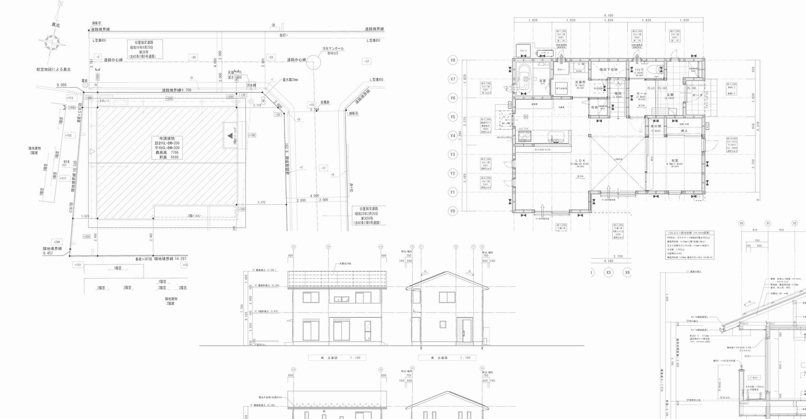

図面作成・設計補助
意匠・構造・設備の図面作成を、設計者様の手を離れる部分から引き受けます。メーカー様・設計事務所様・工務店様の図面作成補助、現場補助にも対応いたします。
- 図面作成（意匠・構造・設備）
- 設計補助・現場補助
- 木造住宅業務支援
- 金物図作成補助（板金・手摺・ルーバーなど）

建築分野に特化したバックオフィス
図面作成・設計補助・各種計算・申請書作成・積算・BIM・3Dモデル作成まで。
建築分野に特化したバックオフィスとして、国内外の専門スタッフが幅広い業務を支援します。
0拠点
国内外の対応ネットワーク
0分野
対応する建築分野
0業務
ワンストップで支援
1枚から
図面1枚のご相談も可
株式会社日本建築製図技術センター（略称：JADTEC／ジャドテック）は、建築分野に特化したバックオフィスです。 図面作成や設計補助をはじめ、施工図、構造計算・省エネ計算のサポート、申請書の作成、積算、BIM・3Dモデルデータの作成、 CADトレースや図面の電子化まで、建築関連業務を幅広く支援しています。
CADトレース、PDFスキャンによる電子化、施工図作成、BIM・3Dデータ作成、図面作成—— 建築の現場には専門性の高い業務が多く、すべてを自社で対応するのは容易ではありません。 「専門家に部分的に外注できれば」という声にお応えするかたちで、当社は建築業界専門のバックオフィスとして事業を行っています。
国内に加え、アジアを中心とした海外にも拠点を構え、有資格者を含む各分野の専門スタッフが対応いたします。 図面1枚のご相談から、継続的な大量案件まで承ります。

建築の図面作成から、計算・申請・積算・BIM・電子化まで。工程ごとに外注先を分ける必要はありません。
意匠・構造・設備の図面作成を、設計者様の手を離れる部分から引き受けます。メーカー様・設計事務所様・工務店様の図面作成補助、現場補助にも対応いたします。
仕上げ図・躯体図をはじめとする施工図を作成いたします。設計図から施工図への展開、現場からの変更反映まで対応いたします。
建築全般の構造計算、および省エネ計算のサポートを行います。2025年4月の法改正に対応しています。
確認申請をはじめとする建築関連書類の作成・事務支援を行います。書類作成に取られる時間を、本来の設計業務に戻していただけます。
数量拾いから積算業務のサポートまで対応いたします。図面から必要数量を算出し、ご指定の様式でご納品いたします。
2次元図面からのBIMモデル化、3Dモデルデータの作成を行います。3Dデータのみでのお見積り・ご依頼にも対応しています。
プレゼンテーションでは視覚情報が重視され、鮮やかな色彩と正確な映像表現が求められます。改修工事のビフォーアフター、造成、都市計画シミュレーション、切盛設計・太陽光計算にも対応いたします。
紙図面をCADデータへ変換します。貴社にある紙媒体の図面をデジタル化し、資産として再利用できる状態にいたします。意匠・電気・機械・構造・土木など各種に対応いたします。
図面・書類のスキャニングから、PDF・TIF化、紙製本・電子製本まで一括で対応いたします。図面の保管・共有・引き渡しにかかる手間を削減いたします。
建築関連業務に付随するシステム開発、多言語翻訳、CAD操作指導にも対応いたします。
仮設から意匠、設備、構造、土木まで。建築に関わる各分野の図面・業務に対応いたします。
対応できる体制と、その理由をご説明します。
建築の図面・書類・計算を専門に扱う会社です。汎用のアウトソーシング会社とは異なり、意匠・構造・設備・施工図それぞれの実務を理解したスタッフが担当いたします。作図基準や納品形式のご指定も、前提を一から説明していただく必要はありません。
図面作成、施工図、構造計算・省エネ計算のサポート、申請書作成、積算、BIM・3D、CADトレース、電子化、製本まで対応いたします。工程ごとに複数の外注先を使い分ける必要がなく、窓口を一本化できます。
国内に加え、アジアを中心とした海外に拠点を構えています。案件の規模や納期に応じて体制を組むことができ、継続的な大量案件にも対応いたします。海外拠点でも国内拠点と同様の情報漏洩防止・セキュリティ対策を講じております。
有資格者を含む専門家チームが、分野ごとに分かれて対応いたします。意匠、構造、設備、施工図、積算といった領域ごとに担当が分かれているため、専門性の高いご依頼にも対応できます。
「まず1枚だけ試したい」というご相談から、月単位・年単位で継続する大量案件まで承ります。スポットでのご依頼をきっかけに、段階的に委託範囲を広げていただくことも可能です。
貴社の作図基準、レイヤー規約、ファイル命名規則、納品様式にあわせて作業いたします。既存の業務フローを変えずに、そのまま外部の作業リソースとしてお使いいただけます。
図面データには、建物の構造や設備の詳細といった機微な情報が含まれます。国内・海外を問わず、全拠点で情報漏洩防止・セキュリティ対策を講じたうえで作業を行っております。機密保持契約（NDA）の締結についてもご相談ください。
2025年4月の法改正に対応しています。制度変更にともなう計算・申請の実務についても、最新の要件を踏まえて対応いたします。
お問い合わせから納品・お支払いまで、8つのステップで進みます。
当社がどのような業務を、どのような体制で支援しているのかを動画でご紹介します。
国内外14拠点を構え、有資格者を含む専門スタッフが対応にあたること。 ご要望に応じて国内外を問わず対応できること。 海外拠点でも国内拠点と同様の情報漏洩防止・セキュリティ対策を講じていること。 ——外注先を検討するうえで確認しておきたい点を、あわせてご覧いただけます。
| 社名 |
株式会社日本建築製図技術センター 略称：ＪＡＤＴＥＣ（ジャドテック） Japan Architectural Drawing Technical Centre Inc. |
|---|---|
| 代表取締役 | 渡邉 英規 |
| 本社 |
〒160-0023 東京都新宿区西新宿3丁目9-7 フロンティア新宿タワーオフィス 2階 TEL：03-3248-1506 / FAX：03-6800-1405 |
| 主な事業内容 |
CAD／CAM／BIM／グラフィックによる図面作成補助業務 建築関連事務支援業務 BPO（ビジネス・プロセス・アウトソーシング）支援業務 システム開発 |
| 海外拠点 | 14拠点 |
| 営業時間・定休日 |
営業日：平日 月曜～金曜 9時～18時 休業日：土曜・日曜・祝日（夜間・土日緊急対応可） |
図面1枚からでも、継続的な業務支援でもご相談いただけます。
「対応できる業務か知りたい」「概算だけ聞きたい」といったお問い合わせも歓迎いたします。